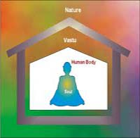

| वास्तु |
|---|
 |
वास्तु उपाय (Vastu Tips)
- तीन टांग वाला मेंढ़क जो मुंह में सिक्का लिए हुए हो, धन और समृद्धि को आकर्षित करता है। इसे अपने घर के मेन गेट के ठीक पास अंदर आते हुए प्रदर्शित करें। यह ध्यान रखें कि इसे सम्मानित जगह पर किसी टेबल के ऊपर रखा जाना चाहिए।
यह आपके मार्ग में आती हुई लक्ष्मी को प्रदर्शित करेगा। फेंगशुई में इस मेंढक को बहुत शुभ माना जाता है। यह धन संबंधी परेशानियां तो दूर करता है साथ ही घर में सकारात्मक वातावरण निर्मित करता है। जिससे घर के सदस्यों को मानसिक शांति मिलती है और सभी में परस्पर प्रेम बना रहता है। ध्यान रहे घर में यदि अन्य कोई बड़ा वास्तु दोष होगा तो निराकरण होना भी आवश्यक है।
- कभी-कभी ऐसा होता है कि व्यक्ति सर्वगुण सम्पन्न होते हुए भी बेरोजगार रह जाता है। वह नौकरी के लिए जितना अधिक प्रयास करता है, उसकी कोशिश विफल होती जाती है। इसके लिए व्यक्ति भाग्य को जिम्मेदार ठहराता है। लेकिन अपने भाग्य को कोसने के बजाय एक उपाय करें- नौकरी के लिए इंटरव्यू देने जाएं, तो जेब में लाल रूमाल या कोई लाल कपड़ा रखें। सम्भव हो, तो शर्ट भी लाल हनें। आप जितना अधिक लाल रंग का प्रयोग कर सकते हैं, करें।
लेकिन यह याद रखें कि लाल रंग भड़कीला ना लगे सौम्य लगे। रात में सोते समय शयन कक्ष में पीले रंग का प्रयोग करें। याद रखें, लाल, पीला व सुनहरा रंग आपके भाग्य में वृद्धि लाता है। अतः हमेशा अपने साथ रखें व इन रंगों का व्यवहार ज्यादा से ज्यादा करें, सफलता मिलेगी।
|
जीवन में पीले रंग को सफलता का सूचक कहा जाता है। पीला रंग भाग्य में वृद्धि लाता है। कन्या की शादी में पीले रंग का ज्यादा से ज्यादा प्रयोग किया जाता है, क्योंकि ऐसा माना जाता है कि कन्या ससुराल में सुखी रहेगी।
विवाह निर्विघ्न होने की शुभ सूचना वस्तुतः हल्दी से सम्पन्न होती है, क्योंकि हल्दी को गणेशजी की उपस्थिति माना जाता है। और जिस कार्य में गणेश जी स्वयं उपस्थित हों, उस कार्य को पूरा करने में विघ्न कैसे आ सकता है।
हल्दी की गांठों में कभी-कभी गणेश जी की मूर्ति का चित्र मिलता है। लक्ष्मी अन्नपूर्णा भी हरिद्रा कहलाती हैं। श्री सूक्त में वर्णन किया गया है कि लक्ष्मी जी पीत वस्त्र धारण किए है। अतः आप समझ सकते हैं कि हल्दी का कितना महत्व है। इतना ही नहीं, बृहस्पति का रंग भी पीत वर्ण का है, तभी तो पीत रंग का पुखराज पहनकर बृहस्पति की कृपा प्राप्त होती है।
|
|
- यदि आपके घर का बजट गड़बड़ा गया हो, आप से ज्यादा खर्च होता है, परिवार में अशांति रहती है, नोट कमाने के सारे प्रयास व्यर्थ साबित हो रहे हों, तो भगवान को खुश करने के लिए पूजा कक्ष में लाल रंग का प्रयोग ज्यादा से ज्यादा करें।
- मकान का मुख्य द्वार दक्षिण मुखी नहीं होना चाहिए। इसके लिए आप चुंबकीय कंपास लेकर जाएं। यदि आपके पास अन्य विकल्प नहीं हैं, तो द्वार के ठीक सामने बड़ा सा दर्पण लगाएं, ताकि नकारात्मक ऊर्जा द्वार से ही वापस लौट जाएं।
- घर के प्रवेश द्वार पर स्वस्तिक या ऊँ की आकृति लगाएं। इससे परिवार में सुख-शांति बनी रहती है।
- घर की पूर्वोत्तर दिशा में पानी का कलश रखें। इससे घर में समृद्धि आती है।
|
- रसोई घर में पूजा की अल्मारी या मंदिर नहीं रखना चाहिए। पूजा करते समय हमारा मुंह पश्चिम दिशा की ओर हो तो यह बहुत शुभ माना जाता है। मंदिर का मुंख पूर्व की दिशा की ओर अच्छा माना जाता है।
- घर के खिड़की दरवाजे इस प्रकार होनी चाहिए, कि सूर्य का प्रकाश ज्यादा से ज्यादा समय के लिए घर के अंदर आए। इससे घर की बीमारियां दूर भागती हैं।
- परिवार में लड़ाई-झगड़ों से बचने के लिए ड्रॉइंग रूम यानी बैठक में फूलों का गुलदस्ता लगाएं।
- रसोई घर में पूजा की अल्मारी या मंदिर नहीं रखना चाहिए।
|